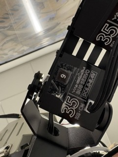
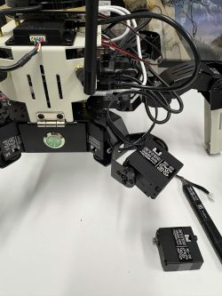
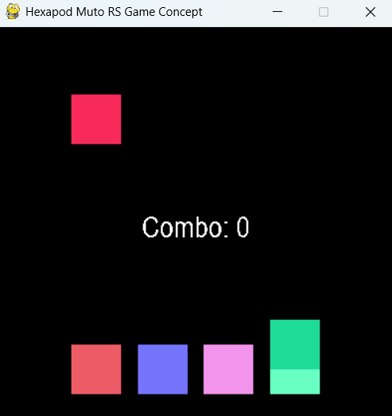

Introduction
Main Guide Being Used Currently: Muto-RS Robot Repository
The library used for controlling the robot with Python is also available there.
This project is a continuation of the work done during CST-481-01: Telecommunications & Networking. With this project, I am seeking to expand upon the robot's capabilities, improve its controls, integrate it with external APIs for additional functionality, and polish previous work to function alongside it.
Weekly Logs
Week 1 - Initial Goals
Week 1: So far, several goals for the project have been set. One of the main goals is to make use of a microphone and speaker to detect when someone says the name of the robot and possibly answer questions using a generative AI API such as Gemini, which are then spoken out loud. It could be used to describe a scene from the camera, break down specific movement instructions for the robot, or answer general questions. An audio queue will be used to signal when the robot is listening to a question and when it stops. Alongside a voice assistant, I would like to add integration with another device such as a smartphone for direct control over a network, which would include a basic app on the connecting device for input of the IP address of the robot and controls. If possible, I would also like to make use of the robot's LiDAR detection capabilities.
Week 2 - Voice Assistant Prototype
Week 2: A prototype of the voice assistant was created this week. It listens for someone to say "muto" to begin listeing to what the user asks. If no speech was detected or there was an error with detection, the program plays an audio cue and states that an error occurred.
If it detects that a question was asked, it first analyzes the question using Gemini to see if the user asked for the assistant to describe what it sees through the camera. If not, it simply asks the question to Gemini and returns its response.
However, if it concludes the user did ask for it to describe an image, it takes a photo with the camera, saves it, and then sends it to Gemini for analysis, which it speaks out loud.
The program and its two modules are coded in Python. They use the libraries SpeechRecognition for Google Speech Recognition, PyAudio for access to the microphone, gTTS for converting text to speech, pygame for audio playback, BytesIO for storage of generated MP3 files for TTS to RAM, and google-genai for use of the Gemini API.
Program Files: assistant.py, speech.py, geminiTest2.py
Week 3 - Joystick Support
Week 3: This week, a new iteration of the controlInteractive program has been created to add support for the controller joystick.
Additionally, there has been work done to install a more modern version of Python onto the Jetson Nano. However, Python 3.14.3 did not properly install as the SSL module was missing.
So, Python 3.12 was attempted next and it successfully installed with SSL functioning, meaning pip could now be used.
Program Files: controlInteractive6.py
Week 4 - Assistant Server-Client Architecture
Week 4: This week, the assistant program was modified to be a server on a PC where most actions are handeled except for when requests for a photo from the robot are made for the assistant to analyze.
This approach was necessary as currently, no functioning audio input and output has been set up on the robot's Jetson Nano. This current iteration has a few bugs, but its main functions are working as intended. They use the speech.py and geminiTest2.py modules from the previous assistant code.
Program Files: assistantServer.py, mutoAssistantClient.py
Week 5 - Joystick Support with Camera Usage
Week 5: During this week, progress was made on combining the additions for joystick support on the controller with the older program that had controller support with tracking of green balls visible in the camera's field of view.
However, this was unable to be extensively tested due to issues with the computer used to program it at the time.
Program Files: mutoControlV1.py
Week 6 - Automatic Code Preparation for the Website
Week 6: This week, a program to automatically format Python code to include usage of the <span> element in HTML has been created to make it easier to create the pages for the code files on this website.
It does not correctly work in some cases as shown in the page below, but it works fine for the way the Muto RS Hexapod code has been programmed. mutoControlV1.py on this website was the first example of it being used.
Alongside this, the broken servo has been singled out and a new one has been ordered to repair the robot.

Program Files: convertPyToHTML.py
A close-up of the broken motor on the Hexapod.

Week 7 - Potential Future Goals
Week 7: This week, further work has been done on expanding the scope of the project as previous goals relating to incorporating the robot with an AI assistant have been met, and there is a want to target different utilities the robot could be used for outside of the LiDAR sensor due to issues with gaining use of it. For the purpose of tracking the location of someone's shoes to follow them closely, I may attempt to train my own cascade based on a bunch of images of the same resolution used by the robot. If that is completed, logic similar to that of moving to center and follow the red ball would be implemented. Also, research has been done regarding multithreading in Python so a singular program could be used for both the assistant and control. However, it is yet to be implemented in a way where it could be tested.
Week 9 - Servo Replacement
Week 9: Further work has been done investigating issues relating to the robot's mobility. The malfunctioning servo has been replaced. However, there are still issues relating to its positioning
Week 10 - Servo Recalibration
Week 10: Further investigation as been done regarding the servo's positioning issues such as with trying to swap it out and seeing what the program recognizes it as.
It turns out that the servos are pre-assigned IDs, so at this moment in time, servo 8 is in place of 9 and the one where 8 should be is current being seen as servo 1 as that is what is was assigned from the factory.
This was confirmed by the last servo of the leg moving when the position of 9 was adjusted, adjusting 9 doing nothing, and that the new servo would move alongside another when 1 was moved.
A resource to reassign servo IDs was found via Yahboom's Amazon listing for the servos and debugging board, and reassigning IDs will be attempted soon.
Following the previous discussion, this solution has been tested and now the servos have been assigned the correct IDs and are working properly.

A picture of two servos removed from the afflicted leg.

Week 11 - Movement and Greetings Through Voice
Week 11: Since the robot's legs are now mostly repaired, work has resumed on the implementation of an assistant with the robot based on code done earlier in the project.
Additional functionality has been added to enable the robot to move in a direction when asked and to wave when greeting. Also, there has been internal changes for the module for Gemini functionality.
The function used to see if the user was asking to analyze an image has been expanded to test for general user intent regarding greetings, photos, and movement.
Program Files: assistantServerV2.py, mutoAssistantClientV2.py,
geminiModule.py, speech.py
Week 12 - Additional Assistant Movements
Week 12: This week, more work has been done to add additional functionality to the assistant. Using just their voice, users can now rotate the robot and have it do the peacock wave motion.
Program Files: assistantServerV3.py, mutoAssistantClientV3.py,
geminiModule.py, speech.py
Week 13 - Error Handling and New Robot Demo Game
Week 13: This week, additional error handling has been added to the geminiModule. Also, a new program to demo the capabilities of the robot has been created.
While the program is best used on keyboard, there is also support for the controller's joystick. On keyboard, the inputs are in order of the colored squares, left to right, using the keys 'D', 'F', 'J', and 'K'.
Those same functions are on the controller as left, down, up, and right on the left joystick. Additionally, for the purposes of the demo, the game has had its speed halved for easier gameplay.

Program Files: assistantServerV3.py, mutoAssistantClientV3.py,
geminiModule.py, speech.py, pygameRhythmGameDEMO.py
A screenshot of the rhythm game demo program for the Hexapod.